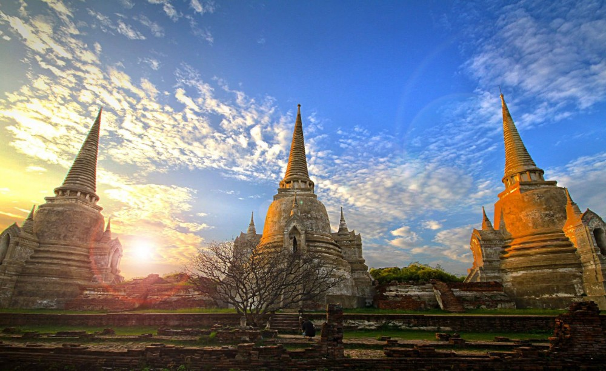

1. วัดพระศรีสรรเพชญ์

วัดพระศรีสรรเพชญ์เป็นหนึ่งในวัดที่สำคัญที่สุดในประวัติศาสตร์อยุธยา
เคยเป็นส่วนหนึ่งของพระราชวังหลวงและใช้เป็นสถานที่ประกอบพิธีกรรมของกษัตริย์
จุดเด่นของวัดนี้คือเจดีย์ทรงลังกาขนาดใหญ่สามองค์ซึ่งใช้บรรจุพระบรมอัฐิของกษัตริย์ในอดีต
ที่ตั้ง : ตำบล ประตูชัย อำเภอ พระนครศรีอยุธยา จังหวัดพระนครศรีอยุธยา 13000
วันและเวลาทำการ : เปิดให้เข้าชมทุกวันเวลา 08.00 - 18.00 น. และเวลา 19.30 - 21.00 น.
2. วัดมหาธาตุ
วัดมหาธาตุเป็นที่รู้จักกันดีในเรื่องเศียรพระพุทธรูปที่ถูกรากไม้ปกคลุม
ซึ่งเป็นภาพที่เป็นสัญลักษณ์ของอยุธยา
วัดนี้เคยเป็นศูนย์กลางทางศาสนาและเป็นที่ตั้งของพระปรางค์ที่สูงที่สุดในยุคนั้น
แม้จะถูกทำลายไปบางส่วน แต่ยังคงเห็นถึงความยิ่งใหญ่ในอดีต
ที่ตั้ง : ตำบลท่าวาสุกรี อำเภอ พระนครศรีอยุธยา จังหวัดพระนครศรีอยุธยา 13000
วันและเวลาทำการ : เปิดให้เข้าชมทุกวันเวลา 08.30 - 18.30 น.
3. วัดไชยวัฒนาราม
วัดไชยวัฒนารามตั้งอยู่ริมแม่น้ำเจ้าพระยา
เป็นวัดที่มีความสวยงามและสมบูรณ์ที่สุดแห่งหนึ่งในอยุธยา
สถาปัตยกรรมได้รับอิทธิพลจากขอมและมีพระปรางค์ศูนย์กลางล้อมรอบด้วยเจดีย์เล็ก
ๆ เป็นสถานที่ที่เหมาะแก่การเยี่ยมชมในช่วงเย็นเพื่อชมพระอาทิตย์ตก
ที่ตั้ง : ตำบล บ้านป้อม อำเภอ พระนครศรีอยุธยา จังหวัดพระนครศรีอยุธยา 13000
วันและเวลาทำการ : เปิดให้เข้าชมทุกวันเวลา 08.00 - 18.00 น.
4. พระราชวังบางปะอิน
พระราชวังบางปะอินสร้างขึ้นในสมัยอยุธยาและต่อมาได้รับการบูรณะในสมัยรัตนโกสินทร์
ภายในพระราชวังประกอบด้วยอาคารที่มีสถาปัตยกรรมหลากหลายแบบ เช่น ไทย
จีน และยุโรป
เป็นสถานที่ที่เหมาะสำหรับการเดินชมวิวและศึกษาเรื่องราวในอดีต
ที่ตั้ง : ตำบล บ้านเลน อำเภอบางปะอิน จังหวัดพระนครศรีอยุธยา 13160
วันและเวลาทำการ : เปิดให้เข้าชมทุกวัน เวลา 08.00 - 16.00 น.
5. อุทยานประวัติศาสตร์พระนครศรีอยุธยา
อุทยานประวัติศาสตร์พระนครศรีอยุธยาเป็นแหล่งรวมโบราณสถานที่สำคัญในอดีต
ซึ่งเคยเป็นศูนย์กลางของอาณาจักรอยุธยา
โบราณสถานสำคัญในเขตนี้รวมถึงวัดราชบูรณะ วัดพุทไธศวรรย์ และวัดพระราม
ทุกแห่งเป็นเครื่องยืนยันถึงความรุ่งเรืองทางศาสนาและวัฒนธรรมในยุคทองของอยุธยา
ที่ตั้ง : 196 หมู่ที่ 4 ถนน คลองท่อ ตำบล ประตูชัย อำเภอ พระนครศรีอยุธยา จังหวัดพระนครศรีอยุธยา 13000
วันและเวลาทำการ : เปิดให้เข้าชมทุกวันเวลา 08.00 - 18.30 น.